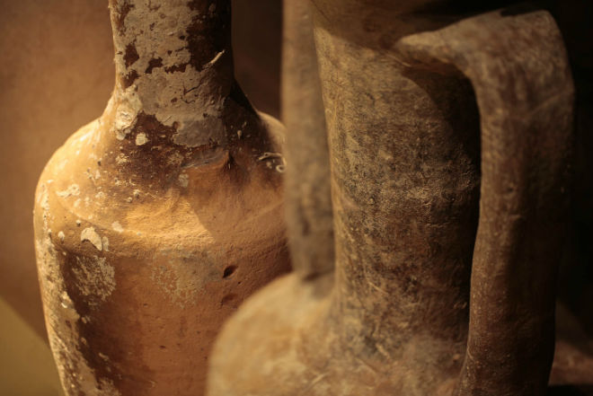
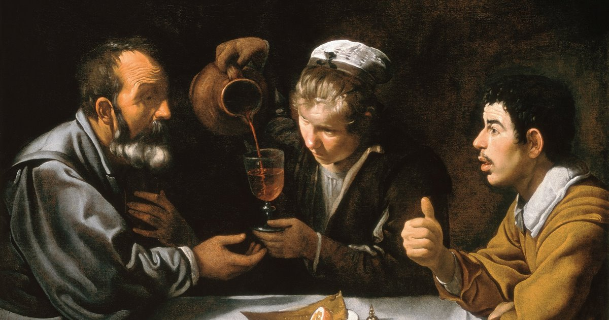

El vino en la Antigüedad
El origen del vino se remonta a las primeras civilizaciones de la humanidad.
Se han encontrado evidencias de producción de vino en regiones como Mesopotamia,
Egipto y el Cáucaso, donde la fermentación de la uva comenzó como un proceso natural.
En estas culturas antiguas, el vino tenía un valor simbólico y religioso,
utilizándose en rituales, celebraciones y ofrendas a los dioses.
En Grecia, el vino se convirtió en un elemento central de la vida social y cultural,
asociado al dios Dionisio. Los griegos difundieron su cultivo por el Mediterráneo,
sentando las bases de la viticultura que luego sería perfeccionada por los romanos.

El vino en la Edad Media
Durante la Edad Media, la producción de vino quedó principalmente en manos de la Iglesia
y la nobleza. Los monasterios desempeñaron un papel fundamental en la conservación y
mejora de las técnicas de cultivo de la vid y elaboración del vino.
El vino era una bebida cotidiana, ya que muchas veces resultaba más seguro que el agua.
En esta época se consolidaron las primeras bodegas subterráneas y se generalizó el uso
de barricas de madera para su almacenamiento y transporte.

El vino en la Edad Moderna
Con la expansión europea, la vid llegó a América, África y otras regiones del mundo.
Durante los siglos XVII y XVIII, se perfeccionaron las técnicas de vinificación y
comenzaron a destacarse regiones vitivinícolas reconocidas internacionalmente.
En esta etapa se introdujeron innovaciones clave como las botellas de vidrio,
el tapón de corcho y los métodos de fermentación controlada. Estos avances marcaron
el inicio de la producción moderna del vino, combinando tradición y tecnología.